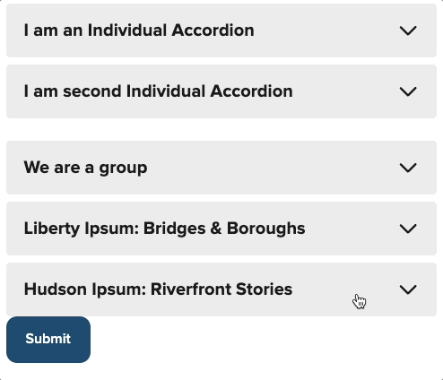
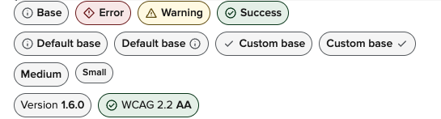

NYS Design System Release 1.7.0 “Hudson”
Are you looking to learn more about the New York State Design System? Be sure to watch our new NYS Design System video series. And check out our two new components: <nys-badge> and <nys-accordion>
Learn the NYS Design System
Visit the "Learn" page on this site to view A video tour by the NYS Design System team to help you learn how to quickly build accessible, mobile-friendly, user-friendly digital services with the Design System.
In this series, we’ll explain what a “design system” is and how ours works. Most importantly, we’ll show the value it can bring to you and to the residents that use what you build with it. Whether you’ve never used a design system before or you’re just new to ours, you’ll learn tips and ideas that will help you build better web applications and sites more quickly.


Weird Al Yankovic would be proud
Add collapsible sections to your content with the new nys-accordion component. You can create a one-off accordion, or group a set together.

Robert Chen (@novacat35) plays a mean accordion.
Show us your badges
The new nys-badge component is a rounded, styled text label which can be used to display categories, tags, or other non-interactable labels for content. You can see examples of the nys-badge at the top of each page.

Emily Gorelik (@emilygorelik) knocked this out of the park!
New icons available
New additions: code, social_bluesky, and social_threads
Thanks to Robert Chen (@novacat35) for keeping our icon set sharp.
🚨 Breaking Changes
nys-alerteventnys-alertClosedchanged tonys-alert-closedbe sure to update if you are referencing the old event name.
⚠️ Known Issues
If you notice any issues, please add them to our GitHub Issue Tracker
That’s it!
For full component updates, bug fixes, and the detailed changelog:
See the full developer release notes for v.1.7.0 →
- release
Edit this page on GitHub (Permissions required)
Last updated: August 22, 2025